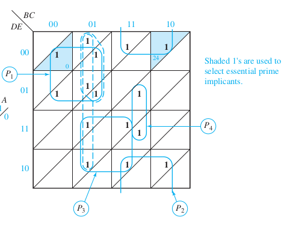
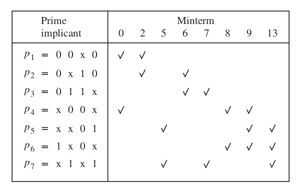
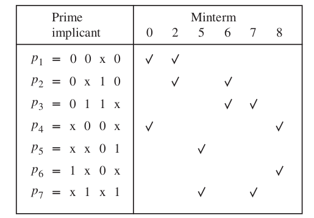
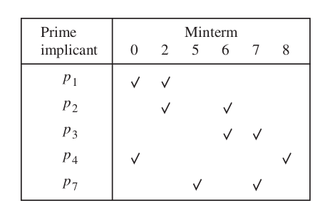
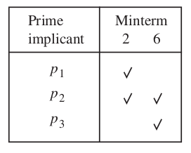
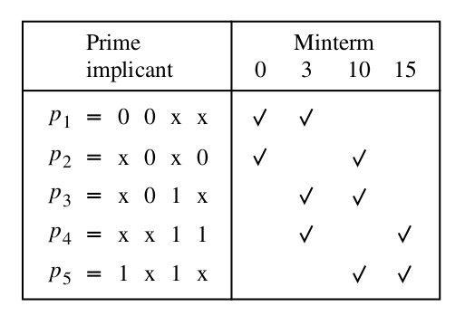
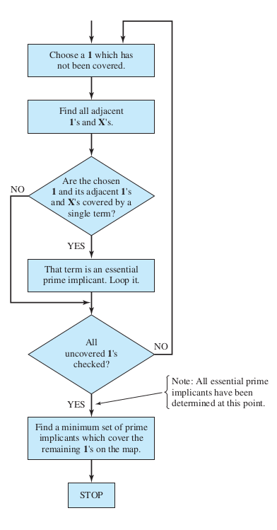

ECE 275: Finding minimal cover/Petrick's method
Announcments
- Homework 2: Solutions are uploaded.
- Homework 3 is due on Sept 27th, Monday before class.
Hw2 Prob 8: POS form
\[ f (x_1 , x_2 , x_3 , x_4 ) = \sum m(0, 2, 8, 9, 12, 15) + D(1, 3, 6, 7). \]Alternative 5-var K-map
\[ F(A, B, C, D, E) = \sum m(0, 1, 4, 5, 13, 15, 20, 21, 22, 23, 24, 26, 28, 30, 31) \]Alternative 5-var K-map
\[ F(A, B, C, D, E) = \sum m(0, 1, 4, 5, 13, 15, 20, 21, 22, 23, 24, 26, 28, 30, 31) \]  Roth's Fundamental of Logic Design
Minimum Cover: Ex 1
\[ f (x 1 , \dots , x 4 ) = \sum m(0, 2, 5, 6, 7, 8, 9, 13) + D(1, 12, 15) \]
\[ P = \{ p_1 = 00*0, p_2 = 0*10, p_3 = 011*, p_4 = *00*, p_5 = **01, p_6 = 1*0*, p_7 = *1*1\} \]
Minimum Cover: Ex 1
\[ f (x 1 , \dots , x 4 ) = \sum m(0, 2, 5, 6, 7, 8, 9, 13) + D(1, 12, 15) \]
\[ P = \{ p_1 = 00*0, p_2 = 0*10, p_3 = 011*, p_4 = *00*, p_5 = **01, p_6 = 1*0*, p_7 = *1*1\} \]




\[ f = \bx_1 x_3 \bx_4 + \bx_2 \bx_3 + x_2 x_4\]
Minimum Cover: Ex 2
\[ f (xx1 , \dots, x_4 ) = \sum m(0, 3, 10, 15) + D(1, 2, 7, 8, 11, 14) \]
\[ P = \{p_1 = 00**, p_2 = *0*0, p_3 = *01*, p_4 = **11, p_5 = 1*1*\} \]
Minimum Cover: Ex 2
\[ f (xx1 , \dots, x_4 ) = \sum m(0, 3, 10, 15) + D(1, 2, 7, 8, 11, 14) \]
\[ P = \{p_1 = 00**, p_2 = *0*0, p_3 = *01*, p_4 = **11, p_5 = 1*1*\} \]

Including \( p_3 \)
\( C = \{ p_1 , p_3, p_4 \} \)Excluding \( p_3 \)
\( C = \{ p_1 , p_5 \} \) \[ f = \bx_1 \bx_2 + x_1 x_3 \]Quine McCluskey algorithm
Find PIs
- Start with a list of cubes (products) that represent the minterms where f = 1 or a don’t-care condition.
- Arrange the minterms in groups of increasing number of ones in the binary representation.
- Generate the prime implicants by successive pairwise comparisons of the cubes.
Find minimum cover
- Derive a cover table which indicates the minterms where f = 1 that are covered by each prime implicant.
- Include the essential prime implicants (if any) in the final cover and reduce the table by removing both these prime implicants and the covered minterms.
- Use the concept of row and column dominance to reduce the cover table further. A dominated row is removed only if the cost of its prime implicant is greater than or equal to the cost of the dominating row’s prime implicant.
- Repeat steps 3 and 4 until the cover table is either empty or no further reduction of the table is possible.
- If the reduced cover table is not empty, then use the branching approach to determine the remaining prime implicants that should be included in a minimum cost cover.
K-map flowchart
 Roth's Fundamental of Logic Design
Petricks method
\[ P = \{ p_1 = 00*0, p_2 = 0*10, p_3 = 011*, p_4 = *00*, p_5 = **01, p_6 = 1*0*, p_7 = *1*1\} \]
Petricks method
\[ P = \{ p_1 = 00*0, p_2 = 0*10, p_3 = 011*, p_4 = *00*, p_5 = **01, p_6 = 1*0*, p_7 = *1*1\} \]
\begin{align}
&(p_1 + p_4)(p_1 + p_2)(p_5 + p_7)(p_2 + p_3)(p_3 + p_7)\underbrace{(p_4 + p_6)(p_4 + p_5 + p_6)}_{(p_4 + p_6)}(p_5 + p_6 + p_7)
\\
&= (p_1 + p_4)(p_1 + p_2)(p_2 + p_3)(p_3 + p_7)(p_4 + p_6)\underbrace{(p_5 + p_7)(p_5 + p_6 + p_7)}_{(p_5 + p_7)}
\\
&= (p_1 + p_4)(p_1 + p_2)(p_2 + p_3)(p_3 + p_7)(p_4 + p_6)(p_5 + p_7)
\\
&= (p_1 + p_4p_2 + p_1 p_2)(p_2 p_7 +p_2 p_3 + p_3 p_7 + p_3)(p_4 p_5 + p_4 p_7 + p_6p_5 + p_6 p_7)
\\
&= (p_1 + p_4p_2 + p_1 p_2)(p_2 p_7 +p_2 p_3 + p_3 p_7 + p_3)(p_4 p_5 + p_4 p_7 + p_6p_5 + p_6 p_7)
\\
&= (p_1 + p_4p_2)(p_2 p_7 + p_3)(p_4 p_5 + p_4 p_7 + p_6p_5 + p_6 p_7)
\\
&= (p_1 p_2 p_7 + p_1 p_3 + p_2 p_4 p_7 + p_2 p_3 p_4)(p_4 p_5 + p_4 p_7 + p_5 p_6 + p_6 p_7)
\\
&= p_1 p_2 p_4 p_5 p_7 + p_1 p_2 p_4 p_7 + p_1 p_2 p_5 p_6 p_7 + p_1 p_2 p_6 p_7
\\&\qquad
+ p_1 p_3 p_4 p_5 + p_1 p_3 p_4 p_7 + p_1 p_3 p_5 p_6 + p_1 p_3 p_6 p_7
\\&\qquad
+ p_2 p_4 p_5 p_7 + \color{red}{p_2 p_4 p_7} + p_2 p_4 p_5 p_6 p_7 + p_2 p_4 p_6 p_7
\\&\qquad
+ p_2 p_3 p_4 p_5 + p_2 p_3 p_4 p_7 + p_2 p_3 p_4 p_5 p_6 + p_2 p_3 p_4 p_6 p_7
\end{align}
\[ f = p_2 + p_4 + p_7 = \bx_1 x_2 \bx_4 + \bx_2 \bx_3 + x_2 x_4 \]
Multi output functions: Ex 1
\( f_1 \)
| \(\bar{x}_1\) | \(x_1 \) | ||||
|---|---|---|---|---|---|
| \(\bar{x}_2\) | \(x_2 \) | \(\bar{x}_2\) | |||
| \(\bar{x}_3\) | \(\bar{x}_4\) | 0 | 0 | 0 | 0 |
| \(x_4\) | 0 | 1 | 1 | 0 | |
| \(x_3\) | 0 | 1 | 1 | 0 | |
| \(\bar{x}_4\) | 1 | 1 | 0 | 0 | |
\( f_2 \)
| \(\bar{x}_1\) | \(x_1 \) | ||||
|---|---|---|---|---|---|
| \(\bar{x}_2\) | \(x_2 \) | \(\bar{x}_2\) | |||
| \(\bar{x}_3\) | \(\bar{x}_4\) | 0 | 0 | 0 | 0 |
| \(x_4\) | 0 | 1 | 0 | 0 | |
| \(x_3\) | 0 | 1 | 0 | 0 | |
| \(\bar{x}_4\) | 1 | 1 | 0 | 0 | |
\( f_2 \)
| \(\bar{x}_1\) | \(x_1 \) | ||||
|---|---|---|---|---|---|
| \(\bar{x}_2\) | \(x_2 \) | \(\bar{x}_2\) | |||
| \(\bar{x}_3\) | \(\bar{x}_4\) | 0 | 0 | 0 | 0 |
| \(x_4\) | 0 | 0 | 1 | 1 | |
| \(x_3\) | 0 | 0 | 1 | 0 | |
| \(\bar{x}_4\) | 0 | 0 | 0 | 0 | |
Multi output functions: Ex 2
\( f_1 \)
| \(\bar{x}_1\) | \(x_1 \) | ||||
|---|---|---|---|---|---|
| \(\bar{x}_2\) | \(x_2 \) | \(\bar{x}_2\) | |||
| \(\bar{x}_3\) | \(\bar{x}_4\) | 0 | 0 | 1 | 0 |
| \(x_4\) | 0 | 0 | 1 | 0 | |
| \(x_3\) | 0 | 0 | 1 | 1 | |
| \(\bar{x}_4\) | 0 | 0 | 1 | 0 | |
\( f_2 \)
| \(\bar{x}_1\) | \(x_1 \) | ||||
|---|---|---|---|---|---|
| \(\bar{x}_2\) | \(x_2 \) | \(\bar{x}_2\) | |||
| \(\bar{x}_3\) | \(\bar{x}_4\) | 0 | 0 | 1 | 0 |
| \(x_4\) | 0 | 0 | 1 | 0 | |
| \(x_3\) | 1 | 1 | 1 | 1 | |
| \(\bar{x}_4\) | 0 | 0 | 0 | 0 | |
\( f_2 \)
| \(\bar{x}_1\) | \(x_1 \) | ||||
|---|---|---|---|---|---|
| \(\bar{x}_2\) | \(x_2 \) | \(\bar{x}_2\) | |||
| \(\bar{x}_3\) | \(\bar{x}_4\) | 0 | 0 | 1 | 0 |
| \(x_4\) | 1 | 1 | 1 | 0 | |
| \(x_3\) | 0 | 0 | 1 | 0 | |
| \(\bar{x}_4\) | 0 | 0 | 1 | 0 | |
EPIs for Multi-output functions
For multiple output functions, we consider only those 1's for EPI that are not present in other fuction maps.
\( f_1 \)
| \(\bar{x}_1\) | \(x_1 \) | ||||
|---|---|---|---|---|---|
| \(\bar{x}_2\) | \(x_2 \) | \(\bar{x}_2\) | |||
| \(\bar{x}_3\) | \(\bar{x}_4\) | 0 | 0 | 0 | 0 |
| \(x_4\) | 1 | 1 | 1 | 1 | |
| \(x_3\) | 0 | 0 | 1 | 0 | |
| \(\bar{x}_4\) | 0 | 0 | 0 | 0 | |
\( f_2 \)
| \(\bar{x}_1\) | \(x_1 \) | ||||
|---|---|---|---|---|---|
| \(\bar{x}_2\) | \(x_2 \) | \(\bar{x}_2\) | |||
| \(\bar{x}_3\) | \(\bar{x}_4\) | 0 | 1 | 1 | 0 |
| \(x_4\) | 0 | 0 | 0 | 0 | |
| \(x_3\) | 0 | 0 | 1 | 0 | |
| \(\bar{x}_4\) | 0 | 1 | 1 | 0 | |
Thanks, Questions, Feedback?
https://vikasdhiman.info/ECE275-Sequential-Logic/